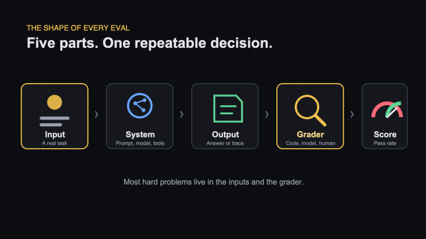

Every AI Eval Has the Same Five Parts
What exactly is inside an AI eval?
The terminology can make it sound more complicated than it is.
Datasets. Trials. Traces. Graders. Harnesses. Scores.
Strip the language away and nearly every eval has the same five parts:
Input → System → Output → Grader → Score
Once this shape is clear, most eval tools become easier to understand.

1. Input
The input is one realistic task.
For a support bot, it might be:
Can I get a refund after 30 days?
For a coding agent, it might be a bug report and a repository.
For a research agent, it might be a question plus a collection of documents.
Good inputs look like real work. They include ambiguity, missing details, typos, awkward phrasing, and edge cases.
Clean demo prompts are useful for demos. They are rarely enough for evals.
2. System
The system is everything that tries to complete the task.
That may include:
- the model
- prompts
- tools
- retrieved context
- memory
- application logic
This matters because an eval does not measure a model in isolation. It measures the product configuration your users actually experience.
Change the prompt, retrieval, tool schema, or model, and the score may change.
3. Output
For a chatbot, the output may be one answer.
For an agent, it may be the full transcript, including every tool call, retry, and intermediate result.
Sometimes the most useful output is not text at all. It is the state left behind.
Did the agent create the correct booking? Did it update the right record? Did the generated SQL run?
For agents, checking the final state is often more reliable than expecting one exact sequence of steps.
4. Grader
The grader decides whether the result is acceptable.
It can be:
- code, such as an exact match or schema check
- another model, often called an LLM judge
- a human reviewer
The grader should check one clear thing.
"Is this response good?" is vague.
"Does every refund-policy claim appear in the supplied policy text?" is testable.
Most of the hard work in evals lives here, because someone must turn a product expectation into a repeatable decision.
5. Score
One test case gives you a pass or fail.
A set of cases gives you a rate.
If 43 of 50 cases pass, the score is 86%.
That number becomes useful when you compare it with something:
- the previous prompt
- a different model
- last week's production score
- a release threshold
A score without context is just a number. A score tied to specific cases tells you what changed.
The surrounding vocabulary
A few common terms now become simple:
- A task or case is one input plus its expected behavior.
- A trial is one attempt at that task.
- A trace is the full record of what happened.
- A suite is a collection of related cases.
- A harness is the plumbing that runs everything and records the results.
Different tools use slightly different names. The five-part shape stays the same.
Three things to remember
- Inputs should look like real user work.
- The grader needs a precise definition of acceptable behavior.
- The score becomes valuable when it helps you compare two versions.
If an eval setup feels confusing, draw five boxes.
You will usually find the missing piece quickly.
Originally published on LinkedIn.